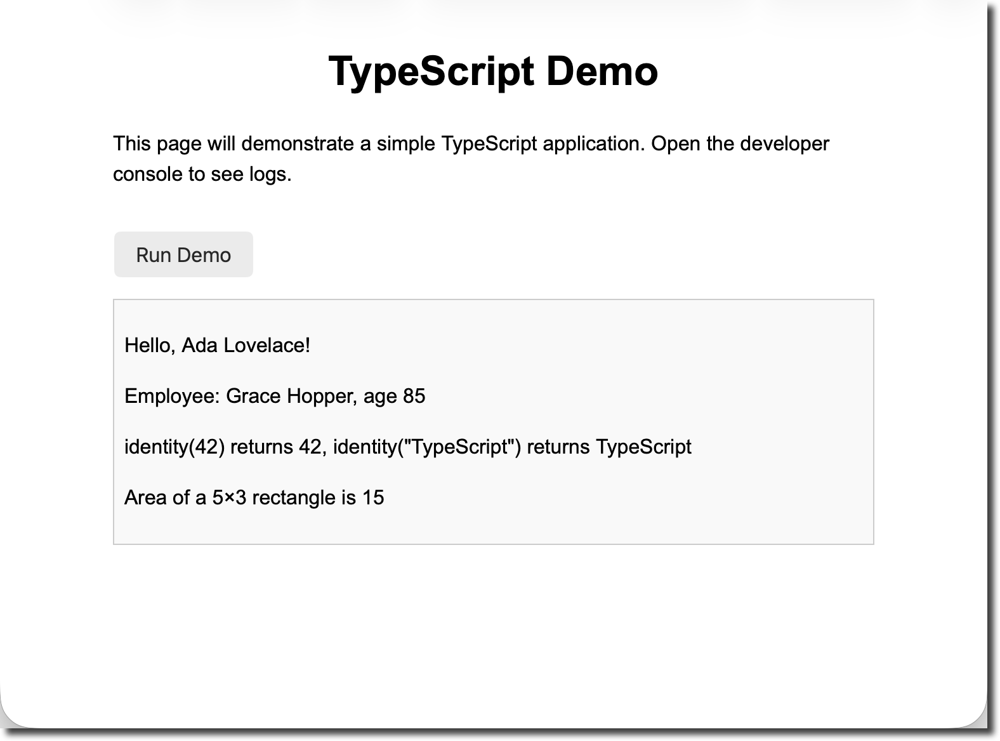

In this demo you will build a small web project using TypeScript. Along the way you will learn why developers increasingly choose TypeScript over JavaScript. By the end you will be able to:
.ts files to JavaScript.Tools Needed
Install the TypeScript compiler globally:
npm install -g typescriptThe tsc command is the TypeScript compiler; it
converts .ts files into .js
files.
JavaScript is a flexible scripting language that has powered web pages since the 1990s, but it uses dynamic typing – the type of a variable is determined at runtime. This means you can reassign a number variable to a string and only discover the mistake when the code runs. Because of this, large JavaScript codebases can be difficult to maintain.
TypeScript is a superset of JavaScript developed by Microsoft that adds static typing and other modern features on top of JavaScript. Being a superset means any valid JavaScript code is also valid TypeScript. According to the Contentful guide, TypeScript was created to address the difficulties of maintaining large JavaScript projects and adds features such as interfaces, generics, type inference and access modifiers not present in standard JavaScript.
Static typing lets you specify the data types of variables, function parameters and return values in advance. The TypeScript compiler checks these types when compiling to JavaScript, so type‑related errors are caught before they reach users. In contrast, JavaScript’s dynamic typing only checks types at runtime, so type errors such as trying to multiply a string by a number are only detected when the buggy code executes.
Interfaces help describe the shape of an object while generics let you write reusable functions and classes that work over a variety of types.
Because TypeScript compiles down to plain JavaScript, anything that works in JavaScript will work in TypeScript. Once compiled, the JavaScript can run in any modern browser or JavaScript runtime without requiring TypeScript support.
Create a working folder. Open a terminal or
file explorer and make a new folder named
typescript-demo. This folder will hold all of the files
for the project.
Create the HTML file. Inside
typescript-demo, create a file named
index.html and add the following markup:
<!DOCTYPE html>
<html lang="en">
<head>
<meta charset="UTF-8" />
<title>TypeScript Demo</title>
<style>
body {
font-family: Arial, sans-serif;
margin: 2rem auto;
max-width: 600px;
line-height: 1.5;
}
h1 {
text-align: center;
}
button {
display: inline-block;
margin-top: 1rem;
padding: 0.5rem 1rem;
font-size: 1rem;
cursor: pointer;
}
#output {
margin-top: 1rem;
padding: 0.5rem;
border: 1px solid #ccc;
background-color: #f9f9f9;
}
</style>
</head>
<body>
<h1>TypeScript Demo</h1>
<p>This page will demonstrate a simple TypeScript application. Open the developer console to see logs.</p>
<button id="runDemo">Run Demo</button>
<div id="output"></div>
<!-- The compiled JavaScript will be loaded here -->
<script src="app.js"></script>
</body>
</html>The HTML sets up a heading, a description, a button to run the
demo and a div where results can be displayed. It also
links to app.js, which will be generated by the
TypeScript compiler in the next steps.
Create the TypeScript file. In the same
folder, create a new file named app.ts. TypeScript uses
the .ts extension. For now leave this file empty; you
will add code in the next step.
(Optional) Create a configuration
file. TypeScript projects often include a
tsconfig.json file to configure the compiler. In this
demo it is optional because we will compile a single file, but if
you want to generate one run:
tsc –init
This creates a default tsconfig.json with many
commented settings. You can enable "strict": true to
opt into TypeScript’s strict type checking, which is recommended for
catching more errors early.
Open app.ts in your editor and add the following
TypeScript code. Each section of the code demonstrates a feature of
TypeScript, and comments explain what is happening.
// app.ts
// 1. Typed variables
// Declare variables with explicit types.
// If you try to assign a value of the wrong type later,
// the compiler will give an error at compile time.
let userName: string = "Ada Lovelace";
let age: number = 36;
let isAdmin: boolean = false;
// 2. Function with typed parameters and return value
// This function returns a greeting.
// Both the parameter and the return type are annotated.
function greet(name: string): string {
return `Hello, ${name}!`;
}
// 3. Interface – defines the shape of an object
// Interfaces are a way to name the shape of an object.
// They describe which properties exist and what types they have.
// Interfaces are a cornerstone of TypeScript’s structural typing.
interface Person {
firstName: string;
lastName: string;
age: number;
}
// 4. Class – implements the interface and uses access modifiers
// Classes give you an object‑oriented way to construct objects. TypeScript
// supports public and private fields. Traditional JavaScript used prototype
// functions for reuse, but modern TypeScript allows you to use classes and
// then compiles them to JavaScript that runs in any browser.
class Employee implements Person {
// private field – cannot be accessed outside the class
private id: number;
// readonly means this property can’t be reassigned after construction
readonly firstName: string;
readonly lastName: string;
age: number;
constructor(id: number, firstName: string, lastName: string, age: number) {
this.id = id;
this.firstName = firstName;
this.lastName = lastName;
this.age = age;
}
getFullName(): string {
return `${this.firstName} ${this.lastName}`;
}
}
// 5. Generic function
// Generics let you write a function that works with many types.
// In languages like C# and Java, generics are a common tool for
// creating reusable components. The identity function below simply
// returns whatever it is given, but thanks to the generic type parameter
// <T> it preserves the type of its argument.
function identity<T>(value: T): T {
return value;
}
// 6. Example function to demonstrate compile‑time type checking
// This function calculates the area of a rectangle. Both parameters must be numbers.
function calculateArea(width: number, height: number): number {
return width * height;
}
// 7. Main function to run the demo when the button is clicked
function runDemo() {
const outputDiv = document.getElementById("output") as HTMLDivElement;
outputDiv.innerHTML = "";
// Use the greet function
const greeting = greet(userName);
outputDiv.innerHTML += `<p>${greeting}</p>`;
// Create an employee and display their full name
const employee = new Employee(1, "Grace", "Hopper", 85);
outputDiv.innerHTML += `<p>Employee: ${employee.getFullName()}, age ${employee.age}</p>`;
// Demonstrate generic function
const numEcho = identity<number>(42);
const strEcho = identity<string>("TypeScript");
outputDiv.innerHTML += `<p>identity(42) returns ${numEcho}, identity("TypeScript") returns ${strEcho}</p>`;
// Calculate area
const area = calculateArea(5, 3);
outputDiv.innerHTML += `<p>Area of a 5×3 rectangle is ${area}</p>`;
// Uncomment the following line to see TypeScript catch a mistake:
// const badArea = calculateArea("five", 3);
// If you remove the comment, the compiler will report an error because the first argument
// is a string. JavaScript would only fail at runtime.
}
// Add event listener to button. TypeScript knows that the element may be null, so we use
// a non‑null assertion (!) to tell the compiler that the element exists.
document.getElementById("runDemo")!.addEventListener("click", runDemo);Let’s unpack some of the terms used above:
string, number and boolean,
the compiler verifies that userName, age
and isAdmin are only used in ways consistent with those
types. If you try to assign a string to a number variable, the
compiler will display an error. This is different from JavaScript,
which would not complain until the code runs.greet function’s parameter and
return type are both annotated. This helps the compiler verify that
callers pass a string and that the returned value is also a
string.Employee class implements the Person
interface. It uses private to hide the id
property and readonly for properties that shouldn’t be
reassigned. TypeScript compiles these classes to JavaScript using
syntax that works in all browsers.identity function
uses a generic type parameter <T> so it can
accept and return any type while preserving the type
information.calculateArea function expects numbers. If you
uncomment the line with "five" you will see a compiler
error, because a string is not assignable to a number. JavaScript
would not detect this error until runtime.To transform your TypeScript code into plain JavaScript, run the
following command in the typescript-demo folder:
tsc app.tsThis produces a file named app.js in the same
directory. If you enabled "strict": true in
tsconfig.json, the compiler will also enforce
additional checks such as preventing the use of variables before
they are assigned.
Open app.js to see the generated JavaScript. Notice
that all type annotations, interfaces and access modifiers have been
removed – the compiled output is standard JavaScript that will run
anywhere. For example, the class definition becomes a constructor
function with prototype methods. TypeScript’s features exist only at
compile time; they do not change the runtime behaviour of your
code.
Open index.html in your web browser (double‑click
the file or drag it into the browser window). You should see the
heading, description and a “Run Demo” button. Click the button to
execute the runDemo function. The output appears in the
output <div>, and you can also open
the developer console to view any logged messages.
Try modifying the code and recompiling. For example, change
age to a string (e.g., age = "thirty";).
When you run tsc app.ts again, the compiler will
produce an error because it detects a type mismatch. With JavaScript
you would only see a problem at runtime when the code tries to
perform numeric operations.

Consider the following JavaScript code:
// JavaScript: dynamic typing can lead to runtime errors
let price = 9.99; // price is a number
price = "cheap"; // price is now a string
console.log(price * 2); // prints NaN because a string cannot be multipliedIn JavaScript, the variable price is dynamically
typed – it can hold any type. Assigning a string to
price is allowed, but when you later try to multiply it
by 2 you get NaN (Not a Number) at runtime.
Now look at the same logic written in TypeScript:
// TypeScript: compile‑time type checking prevents mistakes
let priceTs: number = 9.99;
// priceTs = "cheap"; // Uncommenting this line causes a compile error: "Type 'string' is not assignable to type 'number'"
console.log(priceTs * 2);Here the compiler knows that priceTs must be a
number. If you uncomment the line assigning a string,
tsc will stop with an error. This shows how TypeScript
catches mistakes early.
The example above barely scratches the surface of TypeScript’s capabilities. Some additional features you can explore include:
number | string) or constrain it to specific literal
values (e.g., 'small' | 'medium' | 'large').identity function to build flexible data
structures.import and export syntax to organize code
across files and take advantage of modern module systems.In this tutorial you set up a simple web project that uses
TypeScript, wrote a few typed variables and functions, defined an
interface and a class with access modifiers, and experimented with a
generic function. You compiled your TypeScript file to JavaScript
using the tsc compiler and saw how type annotations and
interfaces vanish after compilation. By comparing the TypeScript and
JavaScript versions of a small snippet, you learned how static
typing catches errors during development rather than allowing them
to sneak into production.